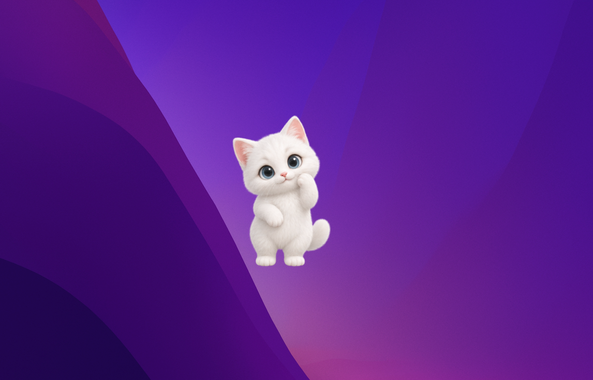
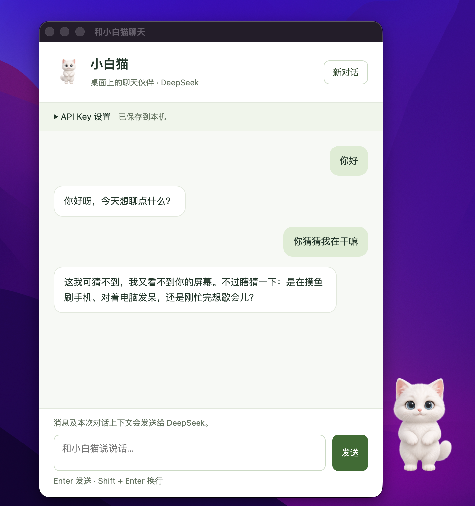

工作间隙，
和它聊几句。
双击小猫，或从右键菜单打开聊天。聊聊今天的小事，也能接着本次对话继续聊；不知道说什么，就选一句开场白填进输入框。
由 DeepSeek 提供文字回复；开场白需你确认发送，退出应用后不保留对话。小白猫 · Mac 桌宠
给整天坐在电脑前的你，一只会待机、会走动的小猫。工作间隙双击它，打开窗口聊聊今天的小事。
Mac 内测中 · 聊天需联网、自备 DeepSeek API Key

当前项目真实截图
01 / Meet your little companion
下面是当前项目的真实截图。一个待在桌面的小伙伴，一扇随时可以打开的聊天窗口。
一个人居家办公，
或是加班后的片刻空闲。

02 / Small things, real company
想聊时靠近一点，专心时留一点空间。按你的节奏，和小白猫相处。
双击小猫，或从右键菜单打开聊天。聊聊今天的小事，也能接着本次对话继续聊；不知道说什么，就选一句开场白填进输入框。
由 DeepSeek 提供文字回复；开场白需你确认发送，退出应用后不保留对话。待机时做些小动作，空闲时左右走动，再回到原处。新用户默认是小白猫，也可以切换成小恐龙外观。
外观选择会保存；已有用户会保留原来的选择。按住拖动，把小猫放到喜欢的位置。需要专心时，右键暂停动画，或暂时隐藏；想它了，从 Mac 菜单栏的猫图标恢复。
隐藏不会清空聊天，恢复时会沿用之前的暂停状态。03 / Make yourself at home
先让小猫住进来，再决定要不要聊聊天。
当前开发配置要求 macOS 13 或更新版本，实际兼容情况请领取时确认。当前内测包由本页对应源码打包，跨设备兼容性尚未全面验证。
下载 DMG 后打开，将“小白猫”拖入 Applications，再从“应用程序”启动。内测包未经过 Apple 公证，首次打开可能出现系统提示；如无法打开，请联系页面分享者。
按住小猫拖动；右键可以聊天、切换外观、暂停、隐藏或退出。
双击小猫，在聊天窗口的 API Key 设置中保存 DeepSeek 密钥，联网后即可发送文字。只看桌宠动画不需要密钥。
04 / A few things to know
把能做的事和需要的准备，讲清楚。
需要网络和你自己的 DeepSeek API Key。接口调用使用你的 DeepSeek 账户额度，费用以该服务的实际计费为准。密钥加密保存在本机，可在设置中删除；消息及本次对话上下文会发送给 DeepSeek。
目前主要是文字聊天，没有语音输入或完整语音对话。右键“打招呼”可以播放固定的“你好呀”。它只保留本次运行期间的对话上下文，退出应用后不保留，也不能看到你的屏幕或替你操作电脑。
可以。右键选择暂停动画，或隐藏桌宠；隐藏后，从 macOS 菜单栏猫图标选择“显示桌宠”即可恢复。隐藏桌宠不会清空聊天或打断聊天窗口。
当前内测包要求 macOS 13 或更新版本。打包配置目标是兼容 Apple 芯片与 Intel 芯片的通用安装包，跨设备兼容性尚未全面验证。目前没有 Windows 版本。
右键桌宠或点击菜单栏猫图标，都有退出入口。内置白猫和小恐龙外观，可通过右键菜单切换。已有用户会保留之前的选择。不论使用哪套外观，聊天身份都是小白猫。
05 / See you on your desktop
给整天坐在电脑前的你，一点小小的陪伴。